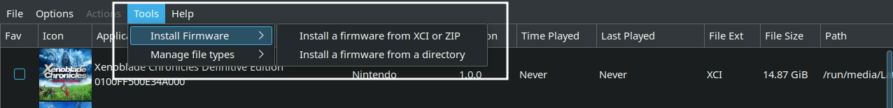

Ryujinx is a Nintendo Switch Emulator.
GitHub: https://github.com/GreemDev/Ryujinx
GitHub Releases: https://github.com/GreemDev/Ryujinx/releases
Quickstart guide: https://github.com/GreemDev/Ryujinx/wiki/Ryujinx-Setup-&-Configuration-Guide
Ryujinx Table of Contents
-
- How to Configure Gyro
- How to Configure Gyro With External Controllers
- How to Optimize Performance (Power Tools)
- How to Configure Multiplayer
- How to Install Mods
- Special Characters
- How to Roll Back Ryujinx to an Older Version
- How to Select Between Yuzu and Ryujinx in Game Mode
- How to Configure Language Settings
Getting Started with Ryujinx
In order to play Nintendo Switch games on Ryujinx, you need a prod.keys file to decrypt your ROMs. You will need to continue to keep your prod.keys up to date as new Nintendo Switch firmware releases.
Firmware is required to play Nintendo Switch games through Ryujinx. To install firmware, open Ryujinx, click Tools, click Install Firmware and select the appropriate option depending on how your firmware is packaged.
Place your ROMs in Emulation/roms/switch. Place your prod.keys file in Emulation/bios/ryujinx/keys. Install your firmware through Ryujinx's GUI. Install your DLC and Updates through Ryujinx's GUI, see How To Manage DLC and Updates to learn how.
Read the Configuration section to learn more about Ryujinx and its folder locations.
To launch your ROMs in game mode, use Steam ROM Manager and use one of the following parsers to play your Nintendo Switch ROMs:
ES-DENintendo Switch RyujinxEmulators
Ryujinx Configuration:
- Type of Emulator: Binary Package
- Executable Location:
/home/deck/Applications/publish/Ryujinxor/home/deck/Applications/publish/Ryujinx.sh - Config Location:
/home/deck/.config/Ryujinx/ - Storage Location:
Emulation/storage/Ryujinx - DLC and Updates:
Emulation/storage/Ryujinx/patchesAndDlc- It's recommended that you place your DLC and Updates directly in this folder. However, you can create any folder for Ryujinx DLC and Updates as long as it is not
Emulation/roms/switch - For more detail, read: How To Manage DLC and Updates
- It's recommended that you place your DLC and Updates directly in this folder. However, you can create any folder for Ryujinx DLC and Updates as long as it is not
- ROMs:
Emulation/roms/switch/ - Keys (required):
Emulation/bios/ryujinx/keys/ - Firmware (required): Install through Ryujinx GUI
- 
- Firmware is installed to
$HOME/.config/Ryujinx/bis/system/Contents/registered
- Saves:
- Symlink:
Emulation/saves/ryujinx/saves - Target:
/home/deck/.config/Ryujinx/bis/user/save
- Symlink:
- saveMeta:
- Symlink:
Emulation/saves/Ryujinx/saveMeta - Target:
/home/deck/.config/Ryujinx/bis/user/saveMeta
- Symlink:
Note: ~/.config is an invisible folder by default. In Dolphin (file manager), click the hamburger menu in the top right, click Show Hidden Files to see these folders.
Works With
- Steam ROM Manager
- ES-DE
Ryujinx Folder Locations
These file locations apply regardless of where you chose to install EmuDeck (to your internal SSD, to your SD Card, or elsewhere). Some emulator configuration files will be located on the internal SSD as listed below.
$HOME refers to your home folder. If you are on a Steam Deck, this folder will be named /home/deck (you will likely not see deck in the file path when navigating using the file manager).
Paths beginning with Emulation/.. correspond to your EmuDeck install location. If you installed on an SD Card, your path may be /run/media/mmcblk0p1/Emulation/roms/... If you installed on your internal SSD, your path may be /home/deck/Emulation/roms/..
Note: Folders with a . (.var, .local, .config, etc.) at the beginning are hidden by default. In Dolphin (file manager), click the hamburger menu in the top right, click Show Hidden Files to see these folders.
$HOME/.config/Ryujinx
Ryujinx/
bis
system
Contents
save
user
Contents
save
saveMeta
temp
Config.json
Config.json.bak
games -> Emulation/storage/ryujinx/games/
mods
contents
exefs_patches
nro_patches
profiles
controller
Deck.json
Deck.json.bak
sdcard
atmosphere
contents
exefs_patches
nro_patches
Nintendo
Contents
save
ocw-config.json
system
prod.keys
Profiles.json
Emulation/bios/Ryujinx
How to Update Ryujinx
How to Update Ryujinx
- Through the
Update your Emulators & Toolssection on theManage Emulatorspage in theEmuDeckapplication - Manual file replacement of
Ryujinx- Refer to How to Swap Out AppImages and Binaries for instructions
- Through the application's automatic updater
- When you open Ryujinx, you may be prompted for an update, accept the prompt to update the application
- Through Ryujinx's built-in updater
- Desktop Mode:
- Search for Ryujinx in the
Applications Launcher(Steam Deck icon in the bottom left of the taskbar) and open it, Ryujinx will prompt for an update if one is available
- Search for Ryujinx in the
- Game Mode:
- Add Ryujinx to Steam by using the
Emulatorsparser in Steam ROM Manager. After adding it to Steam, you may open it in Game Mode, Ryujinx will prompt for an update if one is available
- Add Ryujinx to Steam by using the
- Desktop Mode:
- Through
binupdate.shinEmulation/tools/binupdate, double click to launch
How to Launch Ryujinx in Desktop Mode
How to Launch Ryujinx in Desktop Mode
- Launch
Ryujinx Binaryfrom theApplications Launcher(Steam Deck icon in the bottom left of the taskbar) - Launch the script from
Emulation/tools/launchers,ryujinx.sh - Launch the binary in
/home/deck/Applications/publish/Ryujinx - Launch the emulator from
Steamafter adding it via theEmulatorsparser inSteam ROM Manager
Ryujinx File Formats
- .kp
- .nca
- .nro
- .nso
- .nsp
- .xci
How to Manage DLC and Updates
IMPORTANT: Do not keep your DLC and Update Files in the Emulation/roms/switch folder. Steam ROM Manager will try to parse them and the Steam shortcuts created will not work.
- Place updates and DLC files in
Emulation/storage/ryujinx/patchesAndDlc- It's recommended that you place your DLC and Updates directly in this folder. However, you can create any folder for Ryujinx DLC and Updates as long as it is not
Emulation/roms/switch
- It's recommended that you place your DLC and Updates directly in this folder. However, you can create any folder for Ryujinx DLC and Updates as long as it is not
- Open Ryujinx, right click the ROM, and click
Manage Title UpdatesorManage DLC - Select
Add, and navigate toEmulation/storage/ryujinx/patchesAndDlc, and select your Update or DLC- You can select more than one at a time if you are adding a batch of DLCs
- Optionally, you can right click the
patchesAndDlcfolder and clickAdd to Bookmarks
- After selecting the Update or DLC, select it in the Ryujinx menu, and click save
- Updates:

- DLC:

- Updates:
- Updates will be reflected under the ROM name in the game list, DLC will automatically be applied in-game


Ryujinx Hotkeys
| Ryujinx | Hotkeys | Keyboard Keys |
|---|---|---|
| Stop Emulation | Steam or ... + DPad Left |
Esc |
Ryujinx Tips and Tricks
How to Configure Gyro
Gyro for Ryujinx requires SteamDeckGyroDSU. SteamDeckGyroDSU can be installed via EmuDeck, or it can be installed manually.
Visit SteamDeckGyroDSU to learn how to install and utilize SteamDeckGyroDSU.
How to Configure Gyro With External Controllers
- Switch to Desktop Mode
- Exit out of Steam
- You may exit out of Steam a couple of different ways:
- Right click the
Steamicon in your taskbar and clickExit Steam - Open Steam, click the
Steambutton in the top left, clickExit - Open a terminal (Konsole) and enter
killall -9 steam - Do note that clicking the the
Xbutton in the top right of the Steam window will not exit out of Steam
- Right click the
- Your controls will switch to
Lizard Mode. UseL2to right click,R2to left click, and theRight Trackpadto move the mouse - You may also connect an external keyboard and mouse
- You may exit out of Steam a couple of different ways:
- Click the bluetooth icon in the bottom right of your taskbar and connect your controller
- Open Ryujinx
- Click
Optionsat the top, clickSettings - Click the
Inputtab on the top - Click
ConfigureunderPlayer 1 - Under
Input Device, select your external controller - Select your
Controller Type- Select either
Joycon PairorPro Controllerdepending on the game you are playing
- Select either
- Click
Loadto the right ofController Type - Under
Motion, checkEnable Motion Controlsand uncheckUse CemuHook compatible motion - Exit out of Ryujinx
- Switch to
Game Mode - In Game Mode, connect your controller
- Select your Nintendo Switch game
- On the
Playscreen, select theControllericon to the right of the screen - Select your controller tab at the top
- Click the
Gearicon to the right, and clickDisable Steam Input- You may need to restart first for this setting to properly apply
- Your controller's gyro will now work for this selected game, repeat as needed for your other games
If your controller gyro does not work after the above steps, reset Ryujinx's configuration in the EmuDeck application on the Manage Emulators page and try again.
Post-Configuration
To restore the default Steam Deck controls:
- Open Ryujinx
- Click
Optionsat the top, clickSettings - Click the
Inputtab on the top - Click
ConfigureunderPlayer 1 - Select
Steam Virtual GamepadunderInput Device - Click
Loadon the right side of the screen - Click
Saveand exit out of Ryujinx
(Optional) To restore Steam Input:
- Select your Nintendo Switch game
- On the
Playscreen, select theControllericon to the right of the screen - Select your controller tab at the top
- Click the
Gearicon to the right, and clickEnable Steam Input- You may need to restart first for this setting to properly apply
- The controls will be reverted to Steam Input and the Steam Deck controls will be restored
How to Optimize Performance (Power Tools)
Visit Power Tools to learn how to optimize performance using Power Tools.
How to Configure Multiplayer
Ryujinx comes with a nifty auto-map feature that makes setting up multiplayer a breeze. To set up multiplayer, you simply need to enable the additional ports.
- In Game Mode, open Ryujinx
- You may add Ryujinx to Steam by using the
Emulatorsparser in Steam ROM Manager
- You may add Ryujinx to Steam by using the
- Open the
Inputsettings in theSettingsmenu - For each controller you are using for Player 2, 3, 4, etc, click the respective
Configurebutton- You do not need to adjust any settings for Player 1
- Under
Input Device- Player 2:
Steam Virtual Gamepad 1 - Player 3:
Steam Virtual Gamepad 2 - Player 4:
Steam Virtual Gamepad 3 - Player 5:
Steam Virtual Gamepad 4 - Player 6:
Steam Virtual Gamepad 5 - Player 7:
Steam Virtual Gamepad 6 - Player 8:
Steam Virtual Gamepad 7
- Player 2:
- Using
Player 2as an example:- On the
Player 2configuration screen, after you have selected the appropriateInput Device, select your preferredController Typeand clickLoadto the right ofProfile
- On the
- After you are finished enabling any additional players, click
Saveand you may open your game either directly as a shortcut in Steam or through ES-DE - (Optional) You may need to re-arrange the controller order in Game Mode for your controllers to function as expected. See How to Re-Arrange the Controller Order to learn how
How to Install Mods
Mod Resources
This list is not comprehensive
- GameBanana Mods: https://gamebanana.com/
- Search by game name
- Nexus Mods: https://www.nexusmods.com/
- Search by game name
- GBAtemp: https://gbatemp.net/forums/nintendo-switch.283/?prefix_id=56
- Use https://gbatemp.net/search/?type=post to search
- Sort by
ROM Hackin the prefixes list andNintendo Switchin theSearch in forumslist
- Sort by
- To narrow search results, use the
Search titles onlytoggle
- Use https://gbatemp.net/search/?type=post to search
- SweetFX: http://sfx.thelazy.net/games/
- Search by game name
- theboy181
- 1: Github Collection: https://github.com/theboy181/switch-ptchtxt-mods
- 2: Github Collection: https://github.com/theboy181/switch-cheat-mods
- 3: theboy181's Discord: https://linktr.ee/theboy181
Preface
Read Ryujinx's instructions on how to install mods here: How to Install Ryujinx Mods
The folder structure of a mod is important. It should generally look like the following:
Tutorial
- In Desktop Mode, open Ryujinx
- Right click a game you intend on modding
- Click
Open Mod Data Location - Place your mod folder in the opened folder
- You may need to extract the mod first

- Your mod is now installed

{kind=link}
Special Characters
Files with special characters in the ROM name will not launch from steam. Rename your ROMs and remove the special character.
Known Cases:
inPokmon'inThe Legend of Zelda: Link's Awakening+and'inSuper Mario 3D World + Bowsers Fury
If you used Steam ROM Manager previously, re-run Steam ROM Manager after renaming your ROMs.
How to Remove Special Characters
How to Roll Back Ryujinx to an Older Version
Preface
Your ROMs launch using a script created by EmuDeck, ryujinx.sh in Emulation/tools/launchers.
The script launches the corresponding emulator in /home/deck/Applications/publish and specifically looks for two traits:
- The most recently downloaded version of the emulator in
/home/deck/Applications/publish, based on the file/release date. - The emulator name at the beginning of the file. Anything after the emulator name is ignored.
- For example, if the latest version of the emulator is
1351and you would like to downgrade to1349. When you download version1349, you could rename it toEMULATORNAME-1349.AppImage, and EmuDeck's script will ignore the-1349in the file name, allowing you to record which versions of the emulator you are using through the file name.
- For example, if the latest version of the emulator is
How to Roll Back Ryujinx
- Download the version of the emulator you would like to use from GitHub: https://github.com/GreemDev/Ryujinx/releases
- Move the downloaded emulator from Step 1 to
/home/deck/Applications/publish - (Optional) Rename or delete the original emulator file
- One at a time, right click
RyujinxandRyujinx.sh, clickProperties, clickPermissions, checkIs executable - Your games will now launch using the version of the emulator you downloaded
How to Select Between Yuzu and Ryujinx in Game Mode
If you are using Steam ROM Manager and would like to run some games through Yuzu and others through Ryujinx, you may use Steam ROM Manager's exception manager to selectively run your games in your preferred emulator.
For further instructions, see Steam ROM Manager: How to Hide ROMs on a Per Parser Basis.
If you are using ES-DE, you may use ES-DE's alternative emulators feature to select on a per-game basis which to run through Yuzu and which to run through Ryujinx.
For further instructions, see ES-DE: How to Select a Different Emulator on a Per-Game Basis.
How to Configure Language Settings
UI
- In Desktop Mode, open Ryujinx
- At the top, click
Options, clickChange Language - Select your preferred language in the menu
In-Game
- In Desktop Mode, open Ryujinx
- At the top, click
Options, clickSettings - Click the
Systemtab - To the right of
System Language, select your preferred language in the drop-down menu